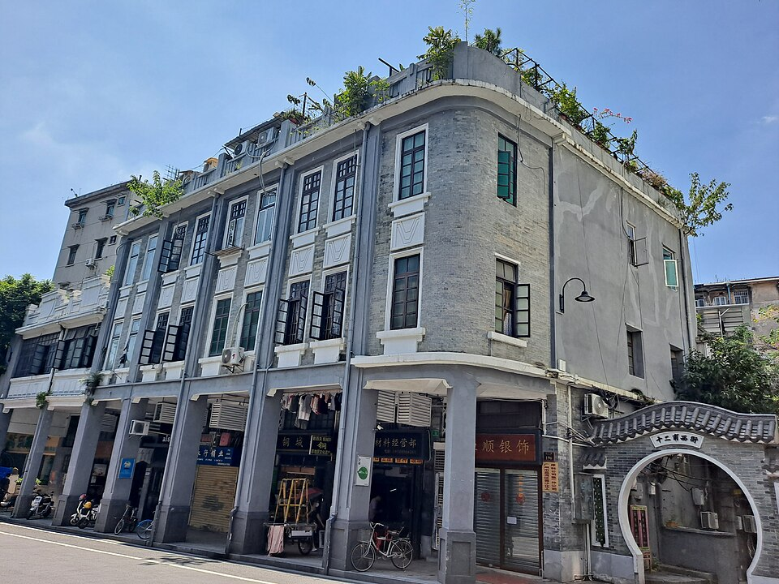
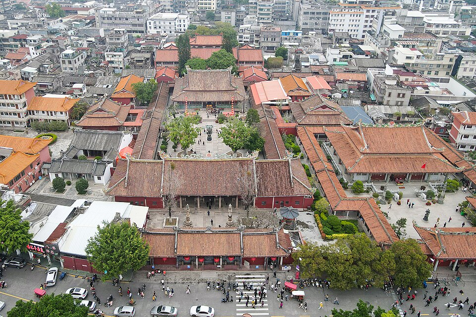
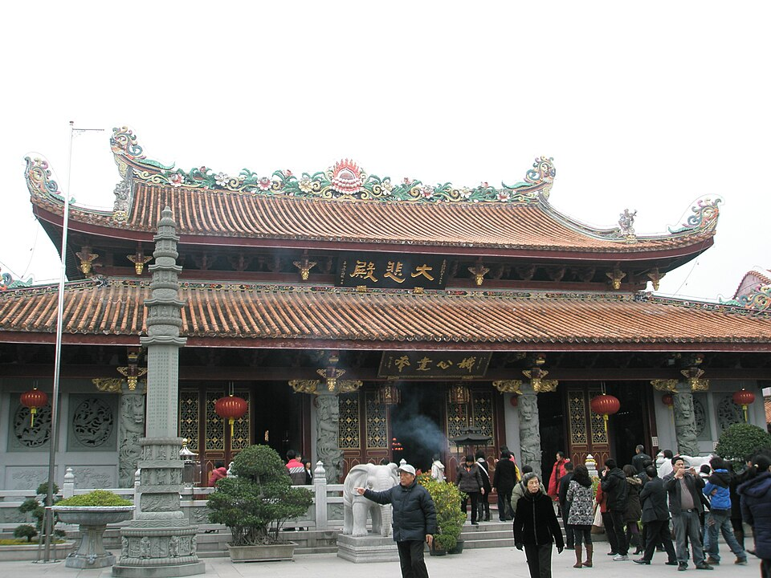
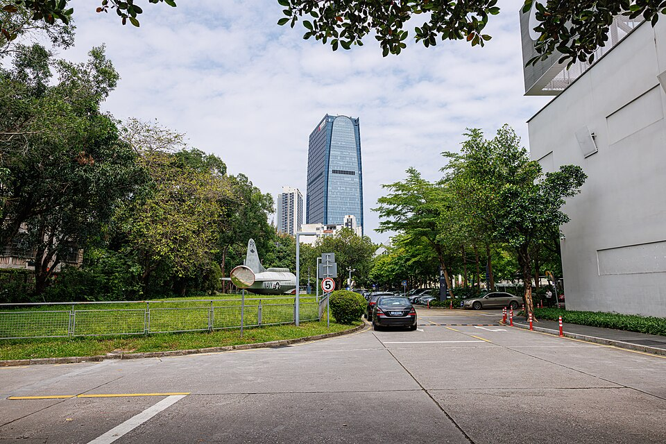
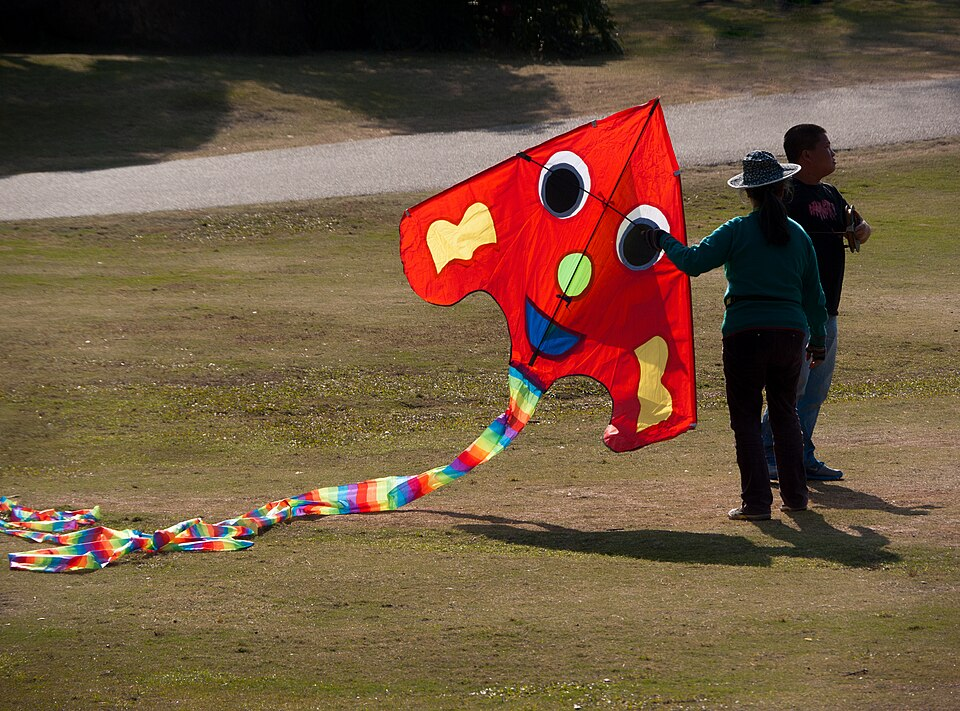
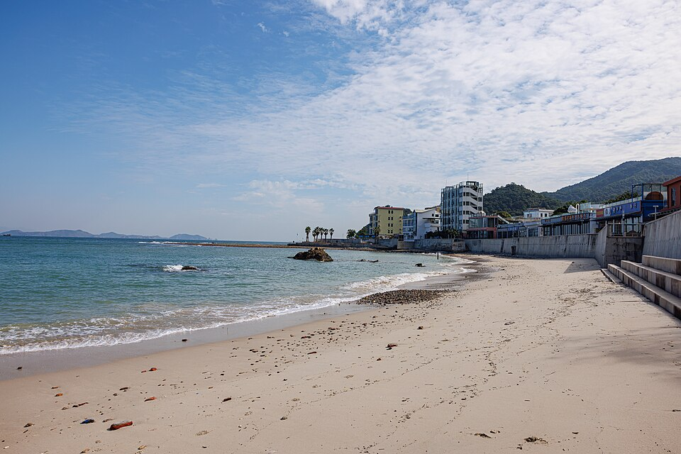
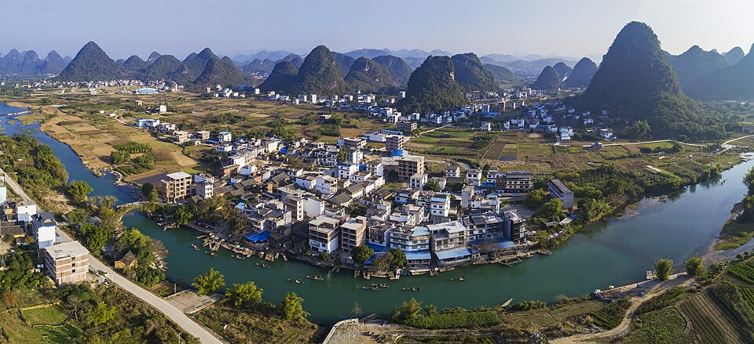
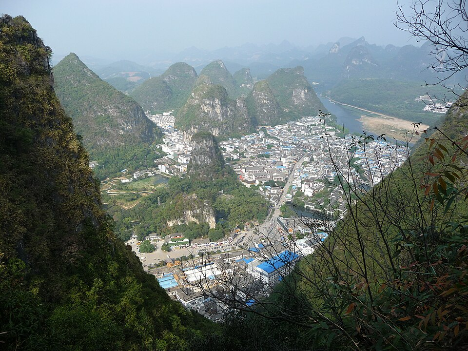
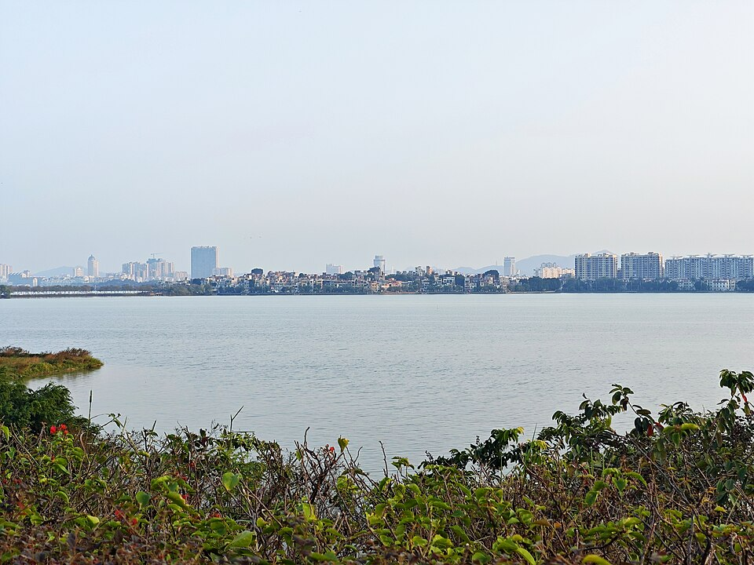

17–22.12
My dwoje w Chaozhou
4 noce na starym mieście w Chaozhou: herbata gongfu, gęś, most Guangji. Wypady do Shantou na wołowy hot pot, do okrągłego domu Daoyun Lou albo na herbaciane wzgórza Fenghuang.
Wersja T · aktualny plan
To jest plan, który teraz rezerwujemy. Mniej przenosin, dłużej w jednym miejscu: Chaozhou, Hongkong i Shenzhen przed świętami, potem wszyscy razem w Zhuhai, Makau, Sylwester w Yangshuo, Zhaoqing i na koniec Kanton. Poniżej: kto kiedy dolatuje, trasa w skrócie, każdy dzień ze zdjęciami, pogoda, formalności i koszty.
17–22.12
4 noce na starym mieście w Chaozhou: herbata gongfu, gęś, most Guangji. Wypady do Shantou na wołowy hot pot, do okrągłego domu Daoyun Lou albo na herbaciane wzgórza Fenghuang.
22–26.12
Dwie noce w Hongkongu przed świętami (Peak, Star Ferry, Mong Kok), potem dwie w Shenzhen: elektronika w Huaqiangbei, Wigilia w mieście i 25.12 szlak na półwyspie Dapeng.
26–29.12
26.12 wieczorem przypływamy promem z Shekou, ekipa dojeżdża autobusem przez most. 27.12 odpoczynek po locie na wyspie Qi'ao, 28.12 Makau pieszo przez Gongbei.
29.12–2.01
Bezpośredni pociąg do Yangshuo. Rowery i tratwy na Yulong, Moon Hill, Sylwester na West Street, 1.01 Xingping i rzeka Li, 2.01 wschód słońca z TV Tower.
2–6.01
Dwie noce przy Seven Star Crags i wypad na górę Dinghu, potem 40 minut pociągiem do Kantonu: Dongshankou, Chen Clan, Shamian, Foshan.
6–11.01
Kanton → Hongkong → Szanghaj → 11.01 wylot do Polski.
Zdjęcia przy każdym dniu przewijasz w bok (gest, kółko z Shift albo pasek pod zdjęciami). Kliknięcie zdjęcia otwiera jego źródło.
Wylot z Warszawy przez Monachium do Szanghaju (PVG).
Nocleg: samolot
Wjazd do Chin w Szanghaju, lot do Kantonu, przylot o 22:55. DiDi z lotniska pod stację Guangzhou North.
Nocleg: Super 8 Huadu przy Guangzhou North (zarezerwowane)
wszystkie zdjęcia: Guangzhou →



G6175 09:02 Guangzhou North → Chaoshan 12:24, DiDi na stare miasto. Spacer, gęś, herbata gongfu, wieczorem podświetlony most Guangji.
Nocleg: Chaozhou, Sihan Courtyard (zarezerwowane)
wszystkie zdjęcia: Chaozhou →





Stare miasto Shantou z arkadami qilou, wieczorem wołowy hot pot.
Nocleg: Chaozhou
wszystkie zdjęcia: Shantou →


Daoyun Lou, ośmiokątny okrągły dom Hakka (ok. 1,5 h), albo herbaciane wzgórza Fenghuang. Z kierowcą umówić też powrót.
Nocleg: Chaozhou
wszystkie zdjęcia: Daoyun Lou (Raoping) →


Na luzie: Longhu, wyspa Nan'ao albo Fenghuang. Kamil wylatuje z Polski.
Nocleg: Chaozhou
wszystkie zdjęcia: Chaozhou →G6573 08:47 Chaoshan → Hong Kong West Kowloon 11:34 (bez przesiadki, ok. 126 zł). Kamil ląduje w CAN o 07:00 i jedzie sam do Hongkongu. Spotkanie w hotelu.
Nocleg: Hongkong, Wellyet Guest House (Mirador Mansion, Tsim Sha Tsui)
wszystkie zdjęcia: Hongkong (Kowloon, Victoria Harbour) →

_02.jpg)


Hongkong w dzień roboczy: Central, Peak Tram, Star Ferry. Wieczorem Mong Kok i Temple Street.
Nocleg: Hongkong
wszystkie zdjęcia: Hongkong (Kowloon, Victoria Harbour) →


Rano MTR do granicy i do Shenzhen. Huaqiangbei (elektronika), OCT Loft. Wieczorem Wigilia w mieście.
Nocleg: Shenzhen, Tourism Trend Hotel (Huaqiangbei)
wszystkie zdjęcia: Shenzhen →
.jpg)





Szlak wybrzeżem półwyspu Dapeng, Dongchong → Xichong (wyjazd najpóźniej o 7:30, bywa zamykany przy złej pogodzie).
Nocleg: Shenzhen
wszystkie zdjęcia: Półwysep Dapeng (Shenzhen) →




Rano Shenzhen: Shekou, park Lianhuashan. Wieczorem prom Shekou → Zhuhai Jiuzhou (18:00 albo 19:30, ok. 1 h, ¥140), DiDi do hotelu. Ekipa ląduje w HKG o 19:00 i jedzie sama Golden Busem przez most. Spotykamy się w hotelu ok. 22–23.
Nocleg: Zhuhai, Phoenix Valley (Gongbei)
wszystkie zdjęcia: Shenzhen →wszystkie zdjęcia: Zhuhai (Gongbei, Qi'ao) →


Na spokojnie po locie: wyspa Qi'ao, promenada Lovers' Road, owoce morza.
Nocleg: Zhuhai
wszystkie zdjęcia: Zhuhai (Gongbei, Qi'ao) →Pieszo przez przejście Gongbei. Ruiny św. Pawła, Senado, Taipa, egg tarty. Dla chętnych taras Macau Tower.
Nocleg: Zhuhai
wszystkie zdjęcia: Makau →


G3792 09:07 Zhuhai → Yangshuo 12:16 bez przesiadki. Stacja jest w Xingping, ok. 35 km od miasta (DiDi 45–60 min). Po południu rowery nad rzeką Yulong.
Nocleg: Yangshuo, Shushe Treehouse (550 m od West Street)
wszystkie zdjęcia: Yangshuo i rzeka Yulong →





Rowery albo skutery nad Yulong, tratwa bambusowa, Moon Hill. Dla chętnych wspinaczka albo via ferrata.
Nocleg: Yangshuo
wszystkie zdjęcia: Yangshuo i rzeka Yulong →


W dzień spokojnie (Fuli, kawiarnie z widokiem). Wieczorem Sylwester na West Street, do hotelu wracamy pieszo.
Nocleg: Yangshuo
wszystkie zdjęcia: Yangshuo i rzeka Yulong →Wypad do Xingping wynajętym busikiem albo autobusem (ok. 1 h). Rzeka Li, widok z banknotu 20 juanów, Laozhai Hill. Wieczorem powrót do Yangshuo.
Nocleg: Yangshuo
wszystkie zdjęcia: Xingping i rzeka Li →


O świcie Yangshuo TV Tower (wejście przy targu na Pantao Rd, ok. 10 min od hotelu). Z hotelu najpóźniej ok. 10:15, bo stacja jest w Xingping, ok. 35 km. D1895 11:54 → Zhaoqingdong 13:41, po południu Seven Star Crags.
Nocleg: Zhaoqing, Starisland Lakeview (Seven Star Crags)
wszystkie zdjęcia: Yangshuo i rzeka Yulong →wszystkie zdjęcia: Zhaoqing (Seven Star Crags, Dinghu) →



Góra Dinghu: las, wodospady, klasztor Qingyun. Ruszamy rano. 3.01 to szczyt powrotów po długim weekendzie, więc zostajemy na miejscu.
Nocleg: Zhaoqing
wszystkie zdjęcia: Zhaoqing (Seven Star Crags, Dinghu) →Rano Zhaoqingdong → Guangzhounan (ok. 40 min), metro do Dongshankou. Wille, kawiarnie, wieczorem rejs po Rzece Perłowej.
Nocleg: Kanton, Manning Hotel (Dongshankou)
wszystkie zdjęcia: Guangzhou →Foshan (świątynia Zumiao) albo Shunde. Chen Clan Academy, wyspa Shamian. Wieczorem pakowanie i ostatnia wspólna kolacja.
Nocleg: Kanton
wszystkie zdjęcia: Foshan / Shunde →wszystkie zdjęcia: Guangzhou →

My + Kamil: DiDi z Dongshankou na CAN ok. 5:15, lot 08:00 → PEK → MUC → WAW. Ekipa zostaje w Kantonie.
Nocleg: ekipa: Kanton
wszystkie zdjęcia: Guangzhou →Ekipa jedzie do Hongkongu (szybka kolej ok. 1 h).
Nocleg: Hongkong
wszystkie zdjęcia: Hongkong (Kowloon, Victoria Harbour) →Miasto, Peak, Mong Kok, ewentualnie szlak Dragon's Back.
Nocleg: Hongkong
wszystkie zdjęcia: Hongkong (Kowloon, Victoria Harbour) →Lot do Szanghaju albo nocny pociąg D908 19:49 → 06:45. To nowy wjazd do Chin, już w 2027 (patrz Formalności).
Nocleg: Szanghaj
wszystkie zdjęcia: Szanghaj (tylko ekipa) →


Bund, stare miasto. Zimno: ok. 8° w dzień, 2° w nocy.
Nocleg: Szanghaj
wszystkie zdjęcia: Szanghaj (tylko ekipa) →

Wylot z Szanghaju do Polski.
Szczegóły i aktualne ceny trzymamy w arkuszu. Najważniejsze zakładki:
| Najlepszy plan. Ever. Tremendous | Aktualny plan dzień po dniu (to, co jest na tej stronie), z kosztami noclegów i przejazdów na osobę. |
| Rezerwacje (hotele i pociągi) | Hotele z datami, cenami i terminami darmowego anulowania oraz pociągi z datą startu sprzedaży. |
| Atrakcje i plan B | Ceny atrakcji ze źródłami, opcje dodatkowe, plan na deszcz i zimno, budżet na pamiątki. |